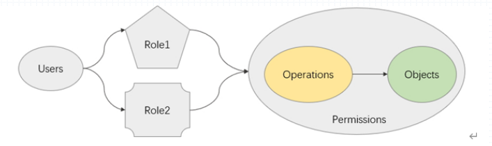

在k8s的1.21.2版本上默认使用的是Node和RBAC。
1 2 3 4 5 6 root@k8s-master01:/etc/kubernetes/manifests - --authorization-mode=Node,RBAC
常用授权逻辑 DAC(自主访问控制)、MAC(强制访问控制)、RBAC(基于角色的访问控制)、ABAC(基于属性的访问控制)
RBAC RBAC：Role-Based Access Control

在一个组织内把一个组织内应该具有的权限的集合定义成多个角色，然后设定某个用户可以扮演其中1到多个角色。从而让某个用户对应的拥有在组织内的授权。
k8s的RBAC是一种许可授权，只允许用户做什么事情，默认拒绝所有。未显式指定授予的权限，默认都会被拒绝。
1 2 3 4 5 Role --> Verbs --> Objects ClusterRole --> Verbs --> Objects Subject --> RoleBinding --> Roles Subject --> ClusterRoleBinding --> ClusterRoles Subject --> RoleBinding --> ClusterRoles
k8s的API-Server是RESTful风格的http/https服务，其权限无非就是基于http协议所能支持的GET, POST, PUT, DELETE, PATCH, …等操作，在API-Server上Object指的是资源对象。
所谓的权限也就是，什么Action能施加到哪些对象上；
RBAC四个资源类型
Role: 角色，名称空间级别；
ClusterRole：集群角色，全局级别；
RoleBinding:”角色绑定”，指是将用户与角色关联起来，意味着，用户仅得到了特定名称空间下的Role的权限，作用范围也限于该名称空间；
ClusterRoleBinding：集群角色绑定，让用户扮演指定的集群角色；意味着，用户得到了是集群级别的权限，作用范围也是集群级别；
User –> Rolebindig –> ClusterRole：权限降级，ClusterRole，用户得到的权限仅是ClusterRole的权限在Rolebinding所属的名称空间上的一个子集；
系统上默认的ROLE 1.查看系统上默认的role
1 2 3 4 5 6 7 8 9 extension-apiserver-authentication-reader 2021-07-15T06:14:01Z kube-proxy 2021-07-15T06:14:03Z kubeadm:kubelet-config-1.21 2021-07-15T06:14:01Z kubeadm:nodes-kubeadm-config 2021-07-15T06:14:01Z system::leader-locking-kube-controller-manager 2021-07-15T06:14:01Z system::leader-locking-kube-scheduler 2021-07-15T06:14:01Z system:controller:bootstrap-signer 2021-07-15T06:14:01Z system:controller:cloud-provider 2021-07-15T06:14:01Z system:controller:token-cleaner 2021-07-15T06:14:01Z
2.查看kube-proxy的role中的内容
1 2 3 4 5 6 7 8 9 10 11 12 13 14 15 16 17 18 root@k8s-master01:~ apiVersion: rbac.authorization.k8s.io/v1 kind: Role metadata: creationTimestamp: "2021-07-15T06:14:03Z" name: kube-proxy namespace: kube-system resourceVersion: "299" uid: b92871dd-4224-4f31-8fe2-0c4b89ca40ff rules: - apiGroups: - "" resourceNames: - kube-proxy resources: - configmaps verbs: - get
能接受施加Verb的目标有三类：
resources：资源类型，该类型下的所有对象都是目标， pods；
resourceNames：特定的对象个体，pods/mypod；
nonResourceURLs：非资源型的URL，/status.
能施加的Verb有以下：
create、get、list、delete、patch、update
RBAC示例 rbac资源清单创建示例 1.使用资源清单来创建role
1 2 3 4 5 6 7 8 9 10 root@k8s-master01:~/yaml/chapter09 kind: Role apiVersion: rbac.authorization.k8s.io/v1 metadata: name: pods-reader namespace: default rules: - apiGroups: ["" ] resources: ["pods" ,"services" ,"pods/log" ] verbs: ["get" ,"list" ,"watch" ]
2.将其应用到集群上
1 2 3 4 5 6 7 root@k8s-master01:~/yaml/chapter09 role.rbac.authorization.k8s.io/pods-reader created root@k8s-master01:~/yaml/chapter09 NAME CREATED AT pods-reader 2021-08-02T06:44:03Z
3.角色需要将其绑定到用户上
1 2 3 4 5 6 7 8 9 10 11 12 13 14 root@k8s-master01:~/yaml/chapter09 kind: RoleBinding apiVersion: rbac.authorization.k8s.io/v1 metadata: name: masuri-pods-reader namespace: default subjects: - kind: User name: masuri apiGroup: rbac.authorization.k8s.io roleRef: kind: Role name: pods-reader apiGroup: rbac.authorization.k8s.io
4.应用绑定
1 2 root@k8s-master01:~/yaml/chapter09 rolebinding.rbac.authorization.k8s.io/masuri-pods-reader created
5.使用masuri账号进行测试
1 2 3 4 5 6 7 8 9 10 11 12 13 14 15 root@k8s-master01:~/yaml/chapter09 NAME READY STATUS RESTARTS AGE configmaps-env-demo 1/1 Running 0 17d configmaps-volume-demo 1/1 Running 0 17d configmaps-volume-demo2 2/2 Running 0 17d configmaps-volume-demo3 1/1 Running 0 16d cronjob-demo-27131450-85h7z 0/1 Completed 0 5m1s cronjob-demo-27131452-xqqrk 0/1 Completed 0 3m1s cronjob-demo-27131454-fn7fp 0/1 Completed 0 61s daemonset-demo-6qqmt 1/1 Running 0 11d daemonset-demo-fvkhj 1/1 Running 0 11d daemonset-demo-pxmrd 1/1 Running 0 11d demodb-0 1/1 Running 0 6d5h demodb-1 1/1 Running 0 6d5h deployment-demo-77d46c4794-5whvx 1/1 Running 0 11d
已经能正常获取pods资源。
集群管理角色 admin集群管理角色 在k8s系统上存在一个admin的ClusterRole，其作用的范围为集群范围，其内部定义了核心资源类型当中的非集群级别资源的管理权限。此admin拥有除集群级别之外的所有管理权限。
1 2 3 root@k8s-master01:~/yaml/chapter09 NAME CREATED AT admin 2021-07-15T06:13:59Z
如果我们使用ClusterRolebinding将某个用户绑定在admin这个ClusterRole上那么其将拥有除了群级别管理权限之外的所有管理权限。
cluster-admin集群管理角色 cluster-admin是集群管理员，其拥有k8s的一切管理权限。
1 2 3 root@k8s-master01:~/yaml/chapter09 NAME CREATED AT cluster-admin 2021-07-15T06:13:59Z
如果将某个用户以clusterRoleBinding绑定在cluster-admin那其将拥有集群级别的一切操作管理权限。
rbac命令行创建示例 admin集群管理角色绑定示例： 此处为了不予刚才示例混淆，先将masuri的role和rolebinding删除
1 2 3 4 5 root@k8s-master01:~/yaml/chapter09 rolebinding.rbac.authorization.k8s.io "masuri-pods-reader" deleted root@k8s-master01:~/yaml/chapter09 role.rbac.authorization.k8s.io "pods-reader" deleted
1.将用户于admin的clusterRole进行绑定
1 2 root@k8s-master01:~/yaml/chapter09 clusterrolebinding.rbac.authorization.k8s.io/masuri-admin created
2.使用masuri账号进行测试
1 2 3 4 5 6 7 8 9 10 11 12 13 14 15 16 root@k8s-master01:~/yaml/chapter09 NAME READY STATUS RESTARTS AGE coredns-6f6b8cc4f6-8wm8v 1/1 Running 0 18d coredns-6f6b8cc4f6-tzmnm 1/1 Running 0 18d etcd-k8s-master01 1/1 Running 1 18d kube-apiserver-k8s-master01 1/1 Running 1 18d kube-controller-manager-k8s-master01 1/1 Running 1 18d kube-flannel-ds-dl2rq 1/1 Running 0 18d kube-flannel-ds-fmml6 1/1 Running 0 18d kube-flannel-ds-rwh5f 1/1 Running 0 18d kube-flannel-ds-tqbbv 1/1 Running 0 18d kube-proxy-6qdpb 1/1 Running 0 18d kube-proxy-kp5ch 1/1 Running 0 18d kube-proxy-ntmzb 1/1 Running 0 18d kube-proxy-vwdm8 1/1 Running 0 18d kube-scheduler-k8s-master01 1/1 Running 1 18d
此时其能访问到kube-system的资源了。但是集群级别的操作依旧不能使用。
1 2 3 4 5 root@k8s-master01:~/yaml/chapter09 Error from server (Forbidden): nodes is forbidden: User "masuri" cannot list resource "nodes" in API group "" at the cluster scope
cluster-admin集群管理角色绑定示例： 将此前创建的admin相关的clusterrolebinding进行删除，以免干扰
1 2 root@k8s-master01:~/yaml/chapter09 clusterrolebinding.rbac.authorization.k8s.io "masuri-admin" deleted
1.将masuri用户使用clusterRolebinding绑定到cluster-admin这个roles上
1 2 root@k8s-master01:~/yaml/chapter09 clusterrolebinding.rbac.authorization.k8s.io/masuri-cluster-admin created
2.再次测试其能否进行集群级别的操作
1 2 3 4 5 6 root@k8s-master01:~/yaml/chapter09 NAME STATUS ROLES AGE VERSION k8s-master01 Ready control-plane,master 18d v1.21.2 k8s-node01 Ready <none> 18d v1.21.2 k8s-node02 Ready <none> 18d v1.21.2 k8s-node03 Ready <none> 18d v1.21.2
授权其他话题 组在k8s中的作用 在k8s中cluster-admin是将 system:masters组绑定在cluster-admin之上的。那么组内的所有用户都将拥有此权限。
1 2 3 4 5 6 7 8 9 10 11 root@k8s-master01:~/yaml/chapter09 Name: cluster-admin Labels: kubernetes.io/bootstrapping=rbac-defaults Annotations: rbac.authorization.kubernetes.io/autoupdate: true Role: Kind: ClusterRole Name: cluster-admin Subjects: Kind Name Namespace ---- ---- --------- Group system:masters
对于证书认证来说组信息在Subj中的O内存放，如果其O内存放的为system:master那么所创建的用户自动拥有管理员权限，无需再授权。
验证 1 2 3 4 5 6 7 8 9 10 11 12 13 14 15 16 17 18 19 20 21 22 23 24 25 26 27 28 29 30 31 32 33 34 35 36 37 38 39 40 root@k8s-master01:/etc/kubernetes/usercerts Generating RSA private key, 2048 bit long modulus (2 primes) .....................................................................................................+++++ ............+++++ e is 65537 (0x010001) root@k8s-master01:/etc/kubernetes/usercerts root@k8s-master01:/etc/kubernetes/usercerts Signature ok subject=CN = testadm, O = system:masters Getting CA Private Key root@k8s-master01:/etc/kubernetes/usercerts Cluster "kubernetes" set . root@k8s-master01:/etc/kubernetes/usercerts User "testadm" set . root@k8s-master01:/etc/kubernetes/usercerts Context "testadm@kubernetes" created. root@k8s-master01:/etc/kubernetes/usercerts Switched to context "testadm@kubernetes" . root@k8s-master01:/etc/kubernetes/usercerts NAME STATUS ROLES AGE VERSION k8s-master01 Ready control-plane,master 18d v1.21.2 k8s-node01 Ready <none> 18d v1.21.2 k8s-node02 Ready <none> 18d v1.21.2 k8s-node03 Ready <none> 18d v1.21.2
以上结果可以看出证书认证中O这一项如果为system:masters则无需再进行授权就能对集群进行操作。组这一项对k8s来说至关重要。
rolebinding来绑定ClusterRole rolebinding来绑定ClusterRole则以为着降级，其会将集群级别的操作限定在名称空间内。
验证 避免干扰先将此前创建的clusterrolebinding进行删除
1 2 root@k8s-master01:/etc/kubernetes/usercerts clusterrolebinding.rbac.authorization.k8s.io "masuri-cluster-admin" deleted
1.将masuri用户使用rolebinding绑定到cluster-admin这个ClusterRole上
1 2 3 4 5 root@k8s-master01:/etc/kubernetes/usercerts rolebinding.rbac.authorization.k8s.io/masuri-admin created
2.验证
1 2 3 4 5 6 7 8 9 10 11 root@k8s-master01:/etc/kubernetes/usercerts NAME TYPE CLUSTER-IP EXTERNAL-IP PORT(S) AGE demoapp-svc ClusterIP 10.102.254.190 <none> 80/TCP 11d demodb ClusterIP None <none> 9907/TCP 7d3h root@k8s-master01:/etc/kubernetes/usercerts Error from server (Forbidden): services is forbidden: User "masuri" cannot list resource "services" in API group "" in the namespace "kube-system" root@k8s-master01:/etc/kubernetes/usercerts Error from server (Forbidden): services is forbidden: User "masuri" cannot list resource "services" in API group "" in the namespace "dev"
rolebinding来绑定ServiceAccount 创建一个ServiceAccount，并将其使用rolebinding绑定到admin的ClusterRole上
1 2 3 4 5 6 7 8 9 root@k8s-master01:/etc/kubernetes/usercerts serviceaccount/dev-admin created root@k8s-master01:~ rolebinding.rbac.authorization.k8s.io/dev-admin created
以上操作后，如果有pod的ServiceAcountName为dev-admin那么此pod将拥有该名称空间下的所有操作权限。